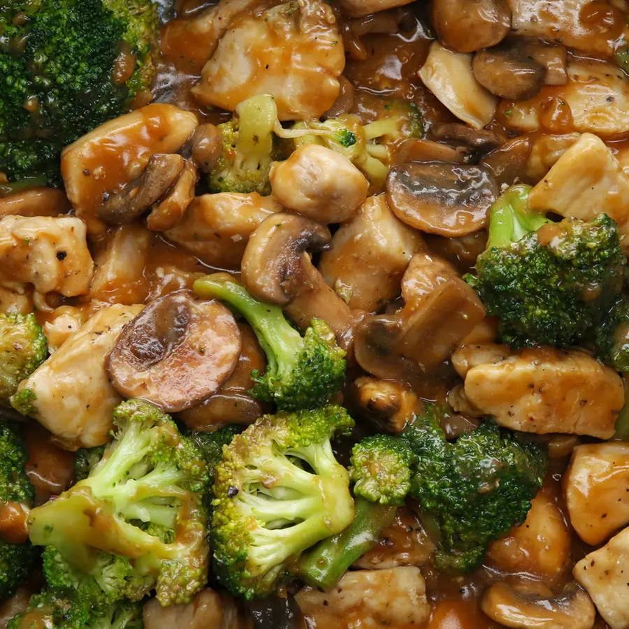

Home
Chicken and Veggie Stir Fry

Description
- Servings: 6
- Calories per Serving: 272
Ingredients
- Food:
- 1 lb chicken breast(455 g), cubed
- salt, to taste
- pepper, to taste
- 1 lb broccoli florets(455 g)
- 8 oz mushroom(225 g), sliced
- 3 tablespoons oil, for frying
- Sauce:
- 3 cloves garlic, minced
- 1 tablespoon ginger, minced
- 2 teaspoons sesame oil
- ⅓ cup reduced sodium soy sauce(80 mL)
- 1 tablespoon brown sugar
- 1 cup chicken broth(240 mL)
- ¼ cup flour(30 g)
Steps
- In a large pan on medium-high heat, add 1 tablespoon of oil. Once the oil is hot, add chicken, season with salt and pepper, and sauté until cooked through and browned. Remove cooked chicken from pan and set aside.
- In the same pan, heat 1 tablespoon of oil and add mushrooms. When the mushrooms start to soften, add broccoli florets and stir-fry until the broccoli is tender. Remove cooked mushrooms and broccoli from the pan and set aside.
- Add 1 tablespoon of oil to the pan and sauté garlic and ginger until fragrant. Add the remaining sauce ingredients and stir until smooth.
- Return the chicken and vegetables to the saucy pan, stir until heated through.
- Serve with hot rice or noodles.
- Enjoy!